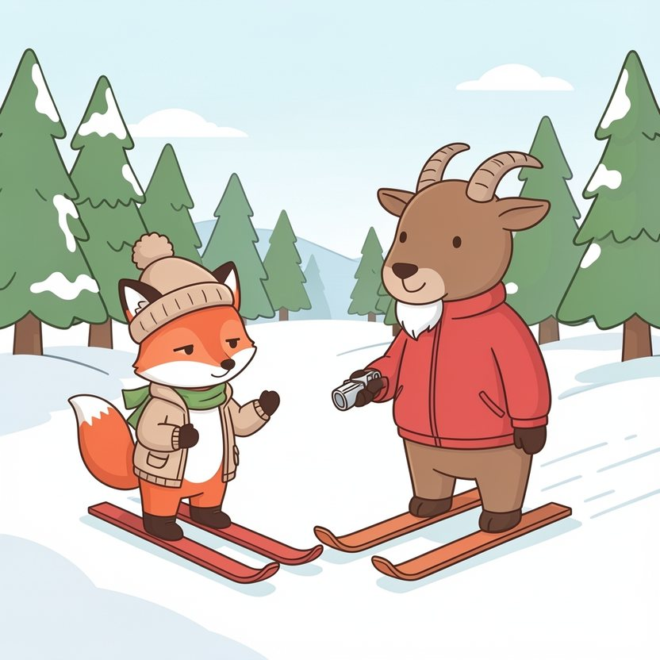

Titistoire › Les Étoiles (3-6 ans)
Filou et la piste noire
Une histoire de Filou le renard pour parler de : écouter les consignes.

▶ Écouter et regarder l'histoire
Gratuit, sans inscription : la voix lit, le texte suit mot à mot, les images tournent comme dans un album.
Le texte de l'histoire
Cet hiver, Filou part à la montagne, à la station des Sapins Blancs. De toute sa vie, il n'a jamais chaussé de skis. « Glisser sur de la neige ? Facile ! »
Le moniteur s'appelle Monsieur Cabri. C'est un vieux chamois, avec un sifflet d'argent et des trésors de patience. « Première leçon : le chasse-neige. On dessine un triangle avec ses skis. Pour freiner. »
« Freiner ? proteste Filou en trépignant. Moi, je veux aller vite ! » « D'abord freiner, répond calmement Monsieur Cabri. Ensuite tourner. Ensuite seulement, aller vite. »
Sur la piste des débutants, des tout-petits s'appliquent à faire le triangle, les fesses en arrière. Filou les regarde en bâillant. Une piste pour les bébés, voilà ce que c'est.
Tout là-haut se dresse une autre piste. Raide comme un toboggan. Avec un panneau noir planté à son pied. « Celle-là, prévient Monsieur Cabri, c'est pour dans très longtemps. »
Dans très longtemps ? Filou guette l'instant où le moniteur a le dos tourné. Et hop, il file en douce vers le télésiège. « Le chasse-neige, c'est bon pour les escargots », ricane-t-il.
Au sommet, le vent siffle. La piste plonge à pic sous ses skis. D'ici, la station est minuscule, et les sapins ressemblent à des brins d'herbe. Filou avale sa salive.
Une marmotte pointe le museau hors de son terrier. « Tu sais tourner, petit ? » « Évidemment. » « Tu sais freiner ? » « Fa… facile. » La marmotte rentre dans son trou. Elle préfère ne pas voir ça.
Filou pousse sur ses bâtons. Ça part. Ça part vite. Ça part TRÈS vite.
« Youhouuu ! » Pendant trois secondes, c'est merveilleux. Puis un sapin fonce droit sur lui. Il faudrait tourner. Filou se penche. Les skis, eux, filent tout droit.
« Aaaah ! » Le sapin le frôle, à une moustache près. Il faudrait freiner. Freiner ! Comment on fait, déjà ? Un triangle ? Un carré ? Filou n'a rien écouté.
Ses skis s'emmêlent. Filou s'envole, fait trois culbutes dans les airs, et PAF ! Le voilà planté dans la neige jusqu'aux oreilles.
Quand il sort la tête, plus de piste. Rien que de la neige, des sapins, et un brouillard qui monte, épais comme du coton. L'un de ses skis a continué la descente sans lui.
« Ohé ? » Personne. Il grelotte, les pattes gelées, de la neige plein le cou. Sur un seul ski, il tente de descendre, et s'étale aussitôt.
Filou s'assoit, les oreilles basses. Pour la première fois de la journée, il ne dit pas « facile ». Il murmure, penaud : « J'aurais dû apprendre à freiner. »
Triiit ! Un coup de sifflet déchire le brouillard. Deux cornes apparaissent, puis une veste rouge. C'est Monsieur Cabri, le ski perdu sous le bras. La marmotte était allée le prévenir.
Filou s'attend à être grondé. Mais Monsieur Cabri s'accroupit, lui époussette la neige des oreilles et lui rechausse son ski. « Tu as eu peur ? » « Oui. » « Bien. La montagne, il faut l'aimer, et la craindre un peu. »
« Maintenant, on redescend. Ensemble. En chasse-neige. Tu vas voir, c'est le moment rêvé pour l'apprendre. »
Un triangle avec les skis. Les genoux pliés. Filou descend à l'allure d'un escargot, derrière la veste rouge. Mais il descend debout. Et quand il veut s'arrêter, il s'arrête.
Le lendemain, il est le premier sur la piste des débutants. Avec les tout-petits, il s'exerce au triangle. Il tombe, il se relève, tout poudré de neige. Et c'est Pompon qui lui montre comment plier les genoux.
Le mercredi, il apprend à tourner à gauche. Le jeudi, à droite. Le vendredi, il enchaîne dix virages sans une chute, et Monsieur Cabri en siffle de joie.
Le dernier jour, Filou lève les yeux vers la piste noire. Elle est toujours là, raide comme un toboggan. « L'année prochaine ? » demande-t-il. « Ou celle d'après, sourit Monsieur Cabri. Elle ne va pas s'envoler. »
Alors Filou s'élance sur la piste bleue. Un virage, deux virages, le vent dans les moustaches. Il file vite. Mais cette fois, c'est lui qui décide où vont ses skis.
En bas, il freine dans une gerbe de neige. Un triangle parfait. Juchée sur son rocher, la marmotte applaudit des deux pattes. « Ça, reconnaît-elle, ça valait le coup de regarder. »